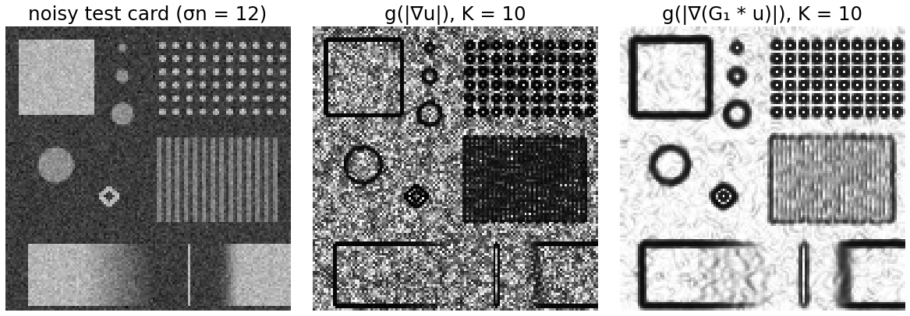
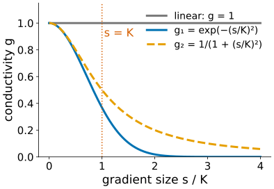
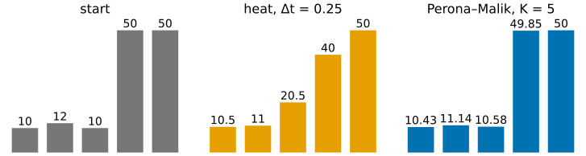
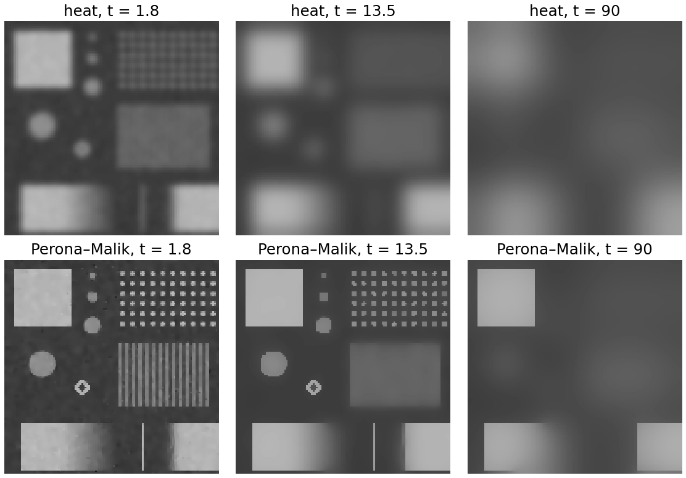
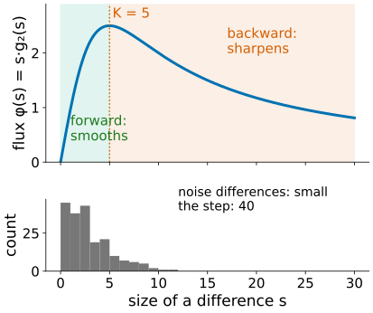
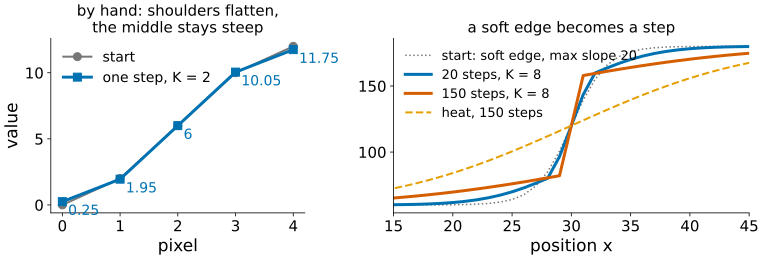
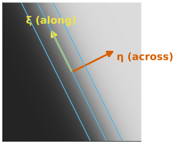
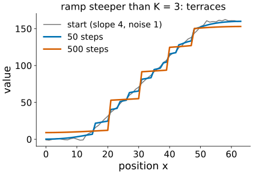
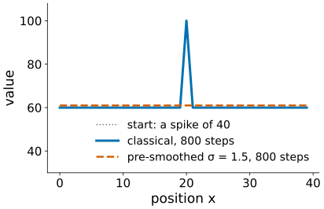
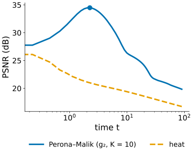

Last unit: heat flow is a Gaussian blur, built step by step. A blur removes noise and edges. Now we let the image decide how much heat may flow (Perona & Malik, 1990).
Slides titled The math give the formulas and proofs; the ideas are complete without them.
Make the heat step image-dependent: between two neighbours, the flow is
g(|\text{difference}|) \times \text{difference},
with a conductivity g between 0 and 1:
Continuous form: u_t = \nabla\cdot\big(g(|\nabla u|)\,\nabla u\big). With g = 1 it is the heat equation again.

White: heat flows. Black: insulates.
Two classical choices, with a contrast parameter K:
g_1(s) = e^{-(s/K)^2}, \qquad g_2(s) = \frac{1}{1 + (s/K)^2}
K is a threshold in disguise, like the hysteresis thresholds of Canny: it has to sit between the typical noise difference and the typical edge height.

Row (10, 12, 10, 50, 50), g_2 with K = 5, \Delta t = 0.25, mirror border.
| pair | difference | g_2 | flow g \cdot d |
|---|---|---|---|
| 1–2 | 2 | 0.862 | 1.72 |
| 2–3 | −2 | 0.862 | −1.72 |
| 3–4 | 40 | 0.015 | 0.62 |
| 4–5 | 0 | 1 | 0 |

The noisy test card (\sigma_n = 12) under heat and under Perona–Malik (g_2, K = 10) for the same time.

Look at the flow \phi(s) = s\,g(s), not at g:
Across a soft edge whose middle is steeper than K, the middle passes less heat than its gentler shoulders. The shoulders flatten, the heat piles up on both sides of the middle, and the middle gets steeper: heat flows “uphill”. This is backward diffusion, an un-blurring.
The histogram below: noise differences sit in the forward range, the step in the backward one.

Row (0, 2, 6, 10, 12), g_2 with K = 2, \Delta t = 0.25. Differences 2, 4, 4, 2; flows \phi(2) = 1 (at the peak) and \phi(4) = 0.8 (past it).
After one step: (0.25, 1.95, 6, 10.05, 11.75). The shoulders moved towards each other (differences 2 → 1.7), the middle moved apart (4 → 4.05). A heat step would have done the opposite in the middle.


A ramp whose slope is larger than K sits in the backward range everywhere. Tiny noise decides where it starts to sharpen first; neighbouring parts sharpen into separate small edges, the parts in between flatten.
The ramp breaks into terraces: a staircase, at random places.

Backward diffusion amplifies whatever is steep, including noise:
The result depends on tiny details of the input, and on the grid.
Cure (Catté, Lions, Morel & Coll, 1992): compute g from a slightly smoothed image, g\big(|\nabla(G_\sigma * u)|\big), with σ about 1 (the Canny σ). A single-pixel spike has no large gradient after smoothing, a real edge still does.

Perona–Malik has no steady state worth having: insulation is never perfect (g > 0), so if you run forever every region drifts to the mean of the image.
The stopping time is a regularisation parameter, like λ or the number of iterations in the deconvolution day (stopping early regularises):

Image libraries usually call this filter “anisotropic diffusion”.